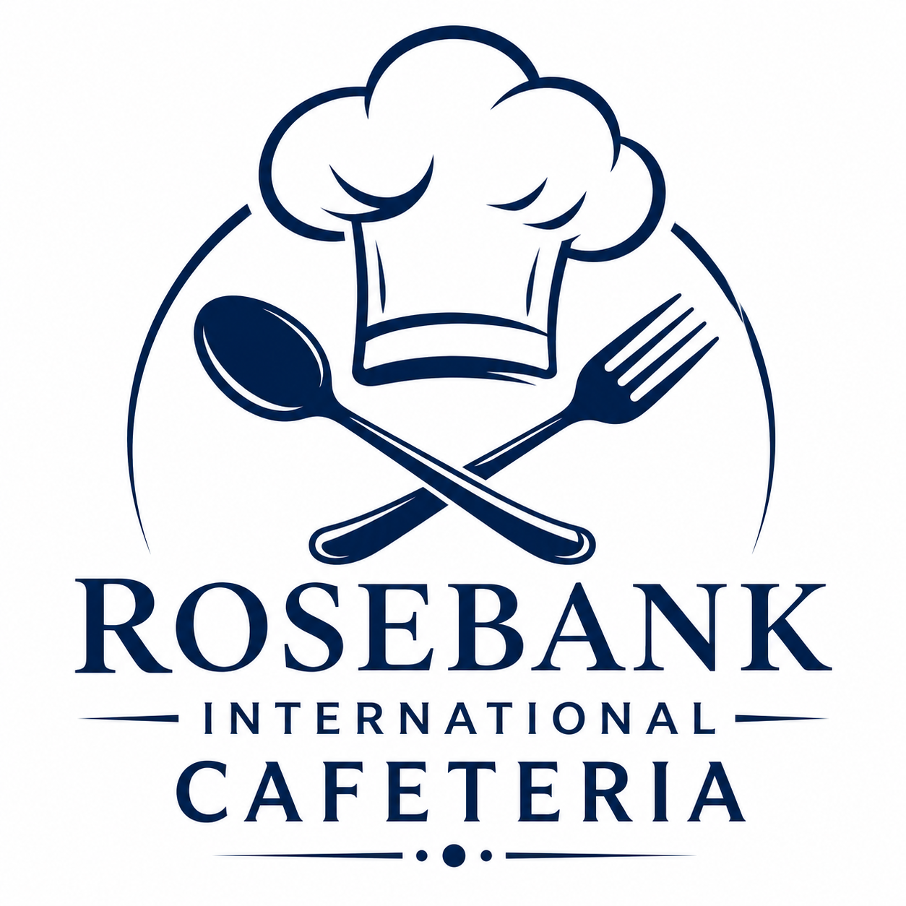

Welcome to Rosebank Cafeteria

Overview
The Rosebank International College Cafeteria is the on-campus dining facility serving students and staff with daily meals, snacks, and beverages. It operates during term time, offering breakfast, lunch, and light refreshments at affordable, student-friendly prices.
Our Mission
To provide fresh, affordable, and high-quality meals while creating a welcoming dining experience for the campus community.
Did You Know?
We are not in just one place, we are on two floors! Find us on the Ground Floor and Second Floor. Make it easier than ever to grab your meals!